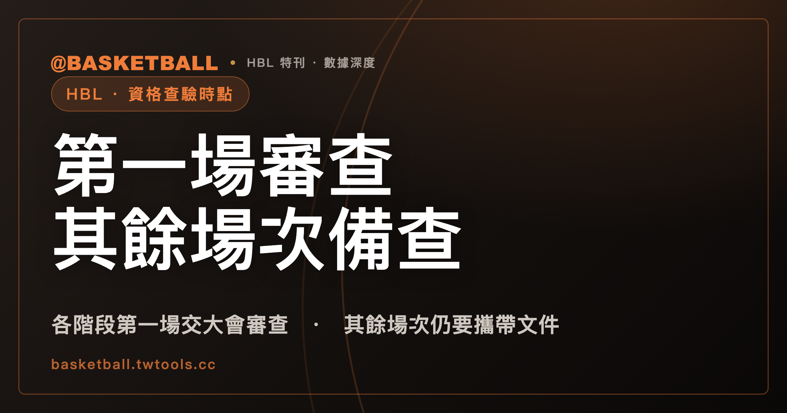

HBL 球員資格什麼時候被查？114 學年度規程的文件關卡，從報名排到各階段其餘場次
114 學年度高級中等學校籃球聯賽競賽規程（修正版）把球員資格的文件關卡排在多個時點：報名時、各階段第一場出賽前、各階段其餘場次。把這些時點串起來，本文稱為「持續查驗」，這是本文的整理用語，規程沒有使用這個說法。

新手村｜HBL・球員資格查驗時點
本文依 114 學年度高級中等學校籃球聯賽競賽規程（修正版）整理；新學年度若改版，以 HBL 官網最新規程為準。本文引用的是 2026 年 9 月 27 日逐頁擷取的規程文字，部分頁面只有節錄；文中說「規程沒有寫」，指的是本文引用的文字裡沒有，不代表官方完整規程一定沒有。
第一次看 HBL 規程的人，容易把「球員有沒有資格」想成報名時一次定案的事：資格條件符合，名字報上去，接下來只要比賽。但翻開 114 學年度規程，跟資格有關的文件關卡出現在好幾個地方，時點各不相同：報名時、各階段的第一場出賽前、各階段的其餘場次，另外還有轉學特殊審議與資格問題的提出時點。
先講一個用詞。「把關」是本文的用詞，規程自己寫的是「審查」「備查驗」，兩個詞用在不同的場次，下面會分開說。規程沒有替這兩個詞下定義，本文只講條文寫到的部分，不補內部做法。
資格條件本身（年齡、學籍等）在HBL 球員資格入門已經寫過，本文不重講；這裡只問一件事：資格由誰、在什麼時點查。讀完之後，你應該能自己列出一支球隊在各個時點要備妥哪些文件。
報名時，學校要先依規程自行審查參賽資格
114 學年度規程第 9 條（報名）三（程序）(三) 寫明：報名時，請依競賽規程之規定，自行審查參賽資格，並依填表說明規定將報名資料輸入系統。這一目的主詞是報名的參賽學校，條文沒有寫明限甲級或乙級，也沒有寫明限男生組或女生組。
報名這一站，條文寫的審查主詞是學校自己。同一節的第 9 條三(一) 也把確認責任放在學校，不過那一目的對象是報名職員，要求學校審慎確認職員具有相應證照或資格；職員資格的細節另見HBL 職員資格入門，本文不展開。
甲級球隊要在報名截止日前，另外繳學生學籍紀錄表
第 9 條三(十) 是甲級才有的一項：114 學年度規程規定，甲級參賽學校需於報名截止日前，繳交學生學籍紀錄表正本或影印本，提供本會審查資格用。成績記錄欄可以免附；紀錄表需加蓋就讀學校教務處戳章及註冊組承辦人職章；若繳的是影印本，需有「與正本相符」字樣。
這一目只寫了甲級。乙級參賽學校是否有類似文件，本文引用的規程文字沒有寫，本文不推論乙級不查，也不推論乙級一樣要繳，只能說本文引用的規程文字沒有寫。
把兩件事並列看：學校在報名時自行審查（第 9 條三(三)），甲級另繳紀錄表給本會審查資格（第 9 條三(十)）。兩條的主詞不同，規程沒有把它們寫成因果或互相替代，本文也只並列，不說哪一件取代哪一件。
各階段第一場出賽前，所有報名球員的文件要交大會審查
第 14 條資格查驗規定(一) 是整套時點的骨幹。114 學年度規程寫明：各階段賽事第一場出賽前，所有報名球員皆應攜帶已完成競賽日期該學期註冊戳章之學生證正本，或其它經大會認可之學籍文件，交由大會審查。條文沒有寫明限甲級或乙級、男生組或女生組。
同一目的後半段寫明後果：相關文件不符規定的球員，無法於該場登錄，至補正後方得登錄及出賽。條文寫的是「球員」與「該場登錄」；至於補正的期限、由誰受理，本文引用的規程文字沒有寫。
有兩件事要和這一目分開看。第一，第 14 條出場規定另有一款：參賽學校應於賽前 30 分鐘由教練提交球員名單（條文未限級別）。那是提交名單的時點，跟資格查驗是不同的條款；名單人數的規定可參考HBL 名單人數入門。第二，「大會」在這一條沒有定義是指哪個單位或哪些人員。第 3 條另有「本會」，規程沒有把它與這一目的「大會」寫成同一個，本文不畫等號。
其餘場次仍要攜帶文件備查驗，查驗不符者取消該場出賽資格
第 14 條資格查驗規定(二) 接著寫其餘場次。114 學年度規程寫明：各階段除第一場次交由大會審查外，其餘場次仍應攜帶已完成該學期註冊戳章之學生證正本，或其它經大會認可之學籍文件，以備查驗；查驗時如有文件不符規定的球員，取消該球員該場出賽資格。適用範圍同上一節：條文沒有限甲級或乙級、男生組或女生組。
讀這一目有兩個細節。其一，「除第一場次交由大會審查外」這句話預設了(一)：兩目互相對照，才拼得出各階段的時間線。其二，第一場用的字是「審查」，其餘場次用的是「備查驗」「查驗」。條文只寫了這兩種用字，沒有說內部流程有何差別，本文不去補。
後果也有範圍：取消的是該球員「該場」的出賽資格。條文寫的是「該場」，本文不把它讀成整個階段或整個學年度。
學生證遺失或沒有註冊戳章欄位時，要帶在學證明正本，且附照片證件
第 14 條資格查驗規定(三) 處理學生證帶不出來的情形。114 學年度規程寫明：學生證遺失，或學生證無註冊戳章欄位時，應攜帶依競賽日期註明第一學期或第二學期的在學證明正本，需加蓋教務處戳章或註冊組承辦人員職章；並且附上有照片的法定證件，經查驗後方得出賽。
這裡的連接詞是「且」：在學證明正本與有照片的法定證件是兩份文件，缺一不可。條文括號裡列的身分證、健保卡、汽機車駕照、護照、居留證是「例」，寫的是例示，不是完整清單。另外，(一) 提到的「其它經大會認可之學籍文件」，除了(三) 的例示外還包含哪些，本文引用的規程文字沒有寫，本文不猜。
(三) 沒有寫明只適用第一場；至於其餘場次遇到同樣情形怎麼辦，是本文的讀法而非條文原話：照條文的結構看，(三) 是針對「學生證遺失或無註冊戳章欄位」這個狀況寫的，字面上沒有把它限定在某一場次。實際有疑問時，仍以 HBL 官網最新規程與大會通知為準。
審查完成後，領回證件是學校的事，大會不負保管之責
第 14 條資格查驗規定(四) 是收尾。114 學年度規程寫明：學生證等相關文件審查完成後，參賽學校應主動領回學生證、在學證明等相關證件，並請於當場核對；若無當場領回，大會不負保管之責。
這一目的主詞是參賽學校：要主動領、要當場核對。條文沒有寫沒領回時具體怎麼處理，只寫了大會不負保管之責這一句。
具正當理由轉學的特殊審議，由參賽資格審議委員會負責
前面幾節講的是文件關卡的時點。具正當理由轉學的學生另有一個時點：114 學年度規程第 7 條二(三)6 寫明，具正當理由轉學的學生，若欲報名「運動成績優良學生升學輔導辦法」規範之組別（含同級別及跨級別），由參賽學校檢具相關證明文件函報本會，經參賽資格審議委員會審核通過者，始得報名參賽。
範圍要記清楚：這一款只寫這一種情形。其餘例外款只需要檢附證明文件，內容見HBL 球員資格入門，本文不重列。
參賽資格審議委員會由專家學者擔任，第 3 條七(二) 寫的職掌是「負責審議具正當理由轉學生之參賽資格」，原文只寫這一項。審議標準、期限、開會時點，本文引用的規程文字都沒有寫。
從時點看，這一關發生在報名之前：要先通過審議，才能報名參賽。這是依條文字面「始得報名參賽」所做的排列。
球員資格問題要在賽前或事實發生時提出
另一個時點在第 18 條（申訴）一：114 學年度規程寫明，有關球員資格問題，應於賽前或事實發生時提出；有關競賽上所發生之問題，則應依據規則及相關規定辦理。條文沒有限級別或組別。
這一句只寫了提出的時點。申訴時限的細節、保證金、受理程序、由哪個單位裁決，本文引用的規程文字都沒有寫。「事實發生時」也沒有定義，本文不把它解釋成某個具體事件。
第 17 條（懲處）另有球隊資格不實或冒名參賽者出賽時的處分規定，依申訴規定提出且經查證屬實者，有相應處分。這條制度存在，本文只點名，不舉例，內容見HBL 球員資格入門。
規程沒有寫「持續查驗」，時點表的排法有什麼依據？
把上面幾節依條文的時點排起來，是下面這張表。先講清楚：規程本身沒有把這些條文排成單一流程，也沒有使用「持續查驗」這個詞；表裡的先後順序是本文依各條文字面時點所做的整理，屬於推論。
| 時點 | 誰、做什麼 | 條文（114 學年度規程） |
|---|---|---|
| 報名前（限具正當理由轉學、欲報名升學輔導辦法規範組別者） | 學校函報，由參賽資格審議委員會審核 | 第 7 條二(三)6 |
| 報名時 | 學校依規程自行審查參賽資格 | 第 9 條三(三) |
| 報名截止日前（限甲級） | 學校繳學生學籍紀錄表，供本會審查資格 | 第 9 條三(十) |
| 各階段第一場出賽前 | 所有報名球員帶學生證正本或其它經大會認可之學籍文件，交大會審查 | 第 14 條資格查驗規定(一) |
| 各階段其餘場次 | 仍要帶同類文件備查驗，不符者取消該球員該場出賽資格 | 第 14 條資格查驗規定(二) |
| 賽前或事實發生時 | 提出球員資格問題 | 第 18 條一 |
「持續查驗」這個說法的依據，是表裡第 4、5 列：各階段第一場交大會審查，其餘場次條文寫的是「仍應攜帶」學生證正本或其它經大會認可之學籍文件「以備查驗」。
拿一個假設情境，自己列出各時點的文件清單
接著用一個明確標示的假設情境練習，不是任何一個學年度或一支真實球隊的事。假設甲隊是 114 學年度規程下參賽的甲級球隊，隊上有一位報名球員在報名之後遺失了學生證。請自己列出各時點要備的文件。
- 報名時：學校依第 9 條三(三) 自行審查參賽資格；甲隊是甲級，第 9 條三(十) 要求在報名截止日前繳學生學籍紀錄表，加蓋教務處戳章與註冊組承辦人職章，影印本要有「與正本相符」字樣。（乙級這一步規程沒寫，不能照抄。）
- 各階段第一場出賽前：(一) 要求所有報名球員把學生證正本或其它經大會認可之學籍文件交大會審查。這位球員學生證遺失，(三) 要求在學證明正本（依競賽日期註明第一學期或第二學期，加蓋教務處戳章或註冊組承辦人員職章），且附上有照片的法定證件。文件不符者，該場無法登錄，補正後才能登錄及出賽。
- 審查完成後：甲隊要主動領回證件，並當場核對。
- 其餘場次：(二) 仍要攜帶文件備查驗。這位球員要帶什麼，(三) 沒有寫明只限第一場，本文的讀法是同樣看(三)，有疑問以 HBL 官網最新規程為準。
- 若有人對某位球員的資格有疑問：第 18 條一要求賽前或事實發生時提出。向誰提出、有沒有時限，本文引用的規程文字沒有寫。
列得出這五步，就等於自己把 114 學年度規程的資格時點走過一遍。差別只在條件：換成乙級、換成具正當理由轉學的球員，就要回頭對條文，本文沒有替這些情形另排清單。
常見問題
114 學年度 HBL 各階段第一場出賽前，球員資格由誰查？
依 114 學年度規程第 14 條資格查驗規定(一)，各階段賽事第一場出賽前，所有報名球員要攜帶已完成競賽日期該學期註冊戳章之學生證正本，或其它經大會認可之學籍文件，交由大會審查。條文沒有寫明限甲級或乙級、男生組或女生組。「大會」在條文沒有定義；文件不符的球員無法於該場登錄，補正後才能登錄及出賽。
第一場審查過了，其餘場次還要帶學生證嗎？
依 114 學年度規程第 14 條資格查驗規定(二)，各階段除第一場次交由大會審查外，其餘場次仍應攜帶已完成該學期註冊戳章之學生證正本或其它經大會認可之學籍文件備查驗；查驗時文件不符的球員，取消該球員該場出賽資格。條文沒有限甲級或乙級、男生組或女生組。
學生證遺失時，114 學年度規程要帶什麼？
依 114 學年度規程第 14 條資格查驗規定(三)，學生證遺失或無註冊戳章欄位時，要帶依競賽日期註明第一學期或第二學期的在學證明正本，加蓋教務處戳章或註冊組承辦人員職章，且附上有照片的法定證件，經查驗後方得出賽；兩份文件是「且」的關係，證件清單（身分證、健保卡等）是條文的例示。條文沒有寫明限甲級或乙級、男生組或女生組，也沒有寫明只適用哪一個階段的場次。
球員資格有疑問，要在什麼時候提出？
依 114 學年度規程第 18 條（申訴）一，球員資格問題應於賽前或事實發生時提出，條文沒有限級別或組別。申訴時限、保證金、受理程序與裁決單位，本文引用的規程文字沒有寫。
資料來源
- 114 學年度高級中等學校籃球聯賽競賽規程（修正版），引用第 3 條、第 7 條二(三)6、第 9 條三、第 14 條資格查驗規定與出場規定、第 17 條一、第 18 條一；本文引用的是 2026 年 9 月 27 日逐頁擷取的存檔：hbl.com.tw/rule